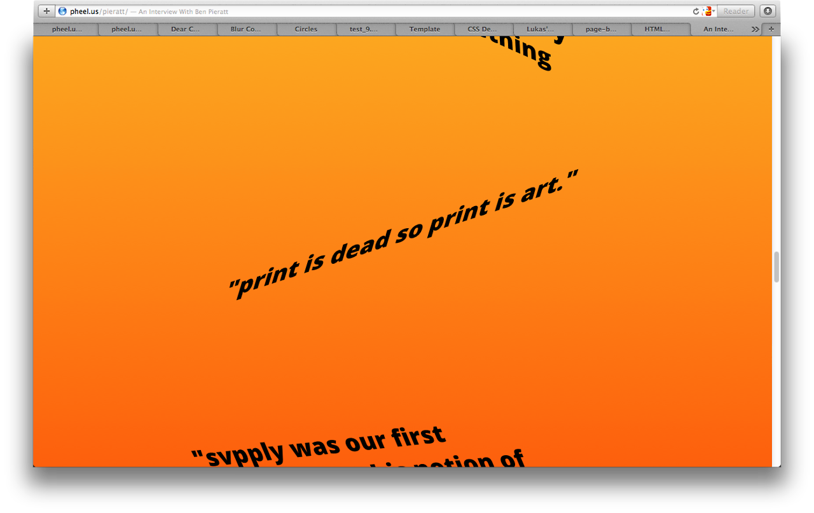
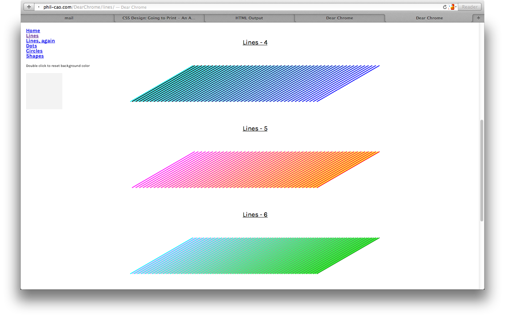
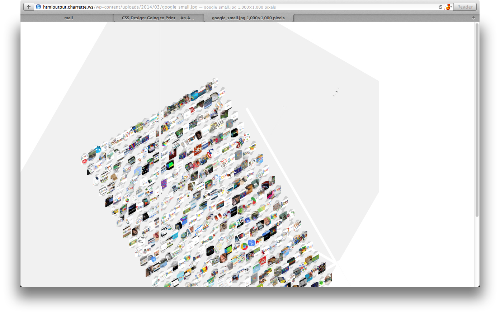
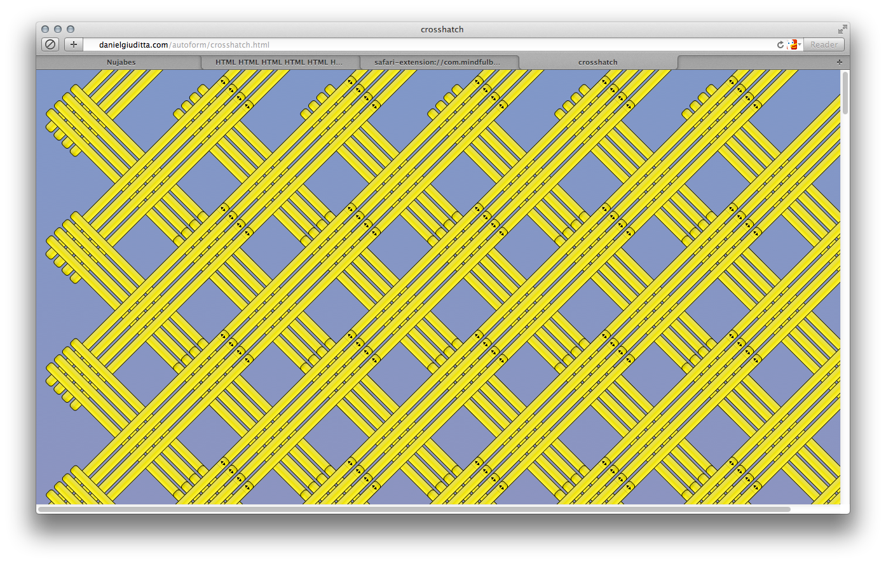

PRINT
HTML
OUTPUT
HTML Output
, taught by John Caserta at the
Rhode Island School of Design
.
Editorial
John Caserta
Digital Systems
Evan Brooks
Phil Cao
Catherine Schmidt
Lukas WinklerPrins
Typography
Christina Rees
John Caserta
Visual Structure
Daniel Giuditta
Kelly
Ojus
RISD GD
#randomness
#data_mashup
#web_interfaces
#patterns
#browser_form
#color_tests
#browser_print
#interview
#web_text
   